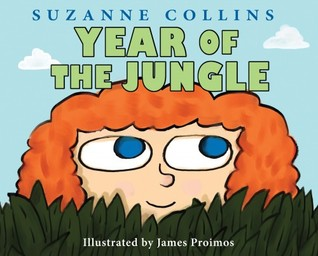

Best Works
News
MOCKINGJAY PART 2
Now a feature film!
Mockingjay – Part 2 was released on November 20, 2015 in the United States, in 2D and IMAX, and internationally in 2D, 3D, RealD Cinema, and IMAX 3D in select territories; it’s the only film in the series widely released in 3D. The film had the sixth-biggest opening in 2015, but held at number one at the international box-office for four consecutive weekends. The film grossed over $653 million worldwide, making it the lowest-grossing of the four films in the franchise, but still a commercial success.
“Ad magna impetus eum, no mel malis tollit ocurreret. Cu lorem solet erroribus per, diam omnis exerci ad ius. Ut vix sumo timeam malorum, fastidii sensibus prodesset eu sea, audire commune ut vel. Mentitum suscipiantur cum ad. At vix posse tation definitiones, mel nominati hendrerit no, ei elit equidem eam.”
-Quote Source
Blog
Fly You High!
1st February 2017

Here’s a picture of me with a rat in Central Park. If you’ve read my fantasy series, The Underland Chronicles, you will have a clue as to why I chose this photo. If not, you may want to click around and find out a little more about my books.
Natalie Dormer
15th January 2017
Natalie Dormer is an English actress. Born and brought up in Berkshire, she was educated at Chiltern Edge Secondary School and Reading Blue Coat School, and trained at the Webber Douglas Academy of Dramatic Art in London.
Red Carpet
30th December 2016
A red carpet is traditionally used to mark the route taken by heads of state on ceremonial and formal occasions, and has in recent decades been extended to use by VIPs and celebrities at formal events. Here are my red carpet stories.
New Children's Book
24th November 2016
A new book is in the works! When Suzy's father is called to war in a faraway jungle, she struggles to deal with his absence. This book has been a pleasure to write and I am delighted to have worked with my talented illustrator, James Prolmos.